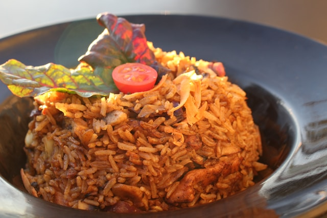

Jollof Rice
HOME

Molded Jollof rice with tomato garnish, served in a black bowl.
RECIPE DESCRIPTION
Jollof rice is a beloved West African one-pot dish where long-grain parboiled rice
is simmered in a rich, smoky, and spicy stew base. This foundational sauce is
created by blending red bell peppers, ripe tomatoes, onions, and scotch bonnet
peppers into a smooth purée. The purée is then reduced and fried in oil with
tomato paste, onions, and a signature blend of seasonings, which typically
includes thyme, curry powder, and bay leaves. Finally, the washed rice is added
to this flavorful stew along with chicken or beef stock, then covered and steamed on low heat
until every grain is perfectly cooked and infused with the vibrant red-orange sauce.
Ingredients
- rice
- chicken
- vegetable oil
- plum tomatoes
- red ball pepper
- onions
- scotch bonnet pepper
- tomato paste
- dried thyme
- curry powder
- bay leaves
- seasoning cubes
- salt
- garlic
- butter
Steps
- Blend red bell peppers, tomatoes, onions, and scotch bonnets into a smooth purée.
- In a large pot, heat oil and fry sliced onions, then stir in tomato paste and fry until it darkens.
- Pour in the blended pepper purée and cook, stirring, until the sauce reduces and oil separates.
- Season the sauce with thyme, curry powder, bay leaves, seasoning cubes, and salt.
- Pour in your chicken or beef stock and bring the entire mixture to a rolling boil.
- Add your washed long-grain parboiled rice and stir just once to combine everything.
- Cover the pot immediately with a tight-fitting lid (using foil first helps seal in steam).
- Reduce the heat to the absolute minimum and let the rice steam for 30-40 minutes.
- Stir in a few knobs of butter, sliced onions, and fresh tomatoes, then cover again for 5 minutes.
- Turn off the heat, let it rest for 10 minutes, then fluff the rice with a fork and serve.